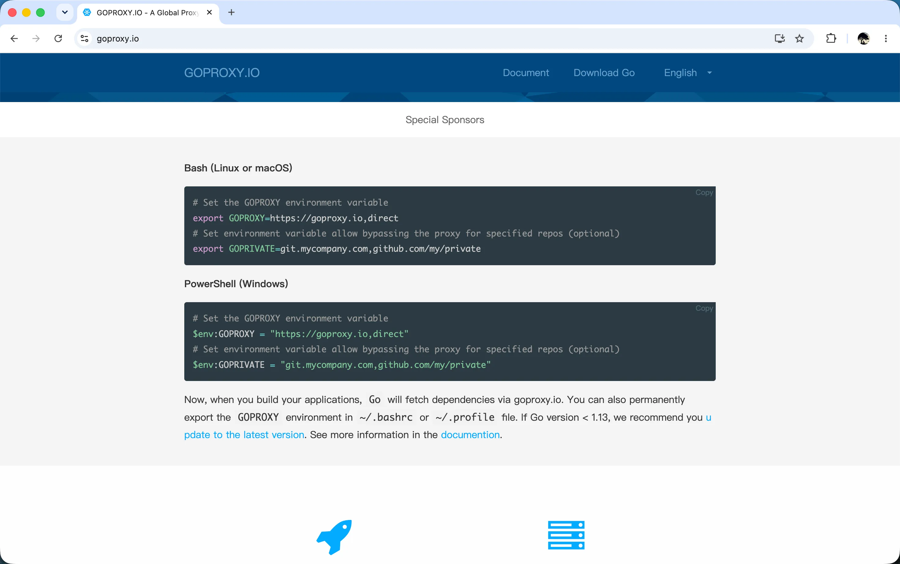
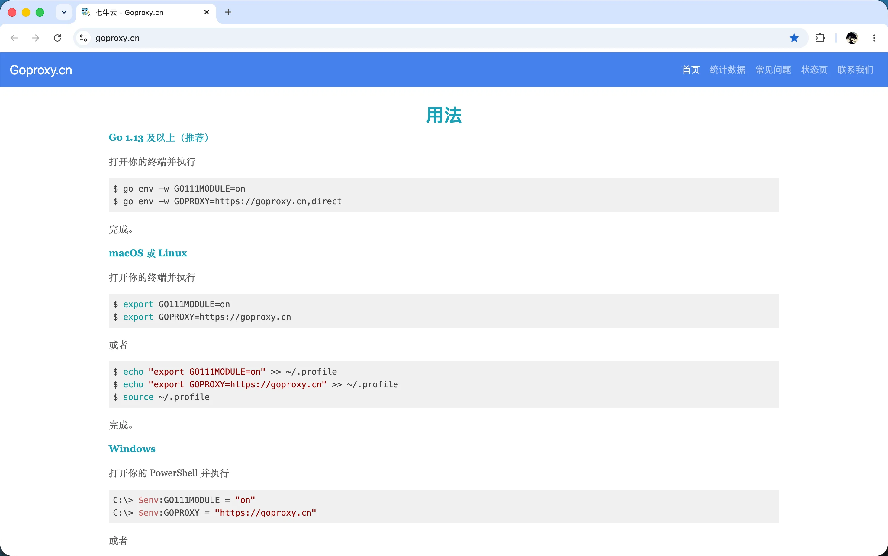
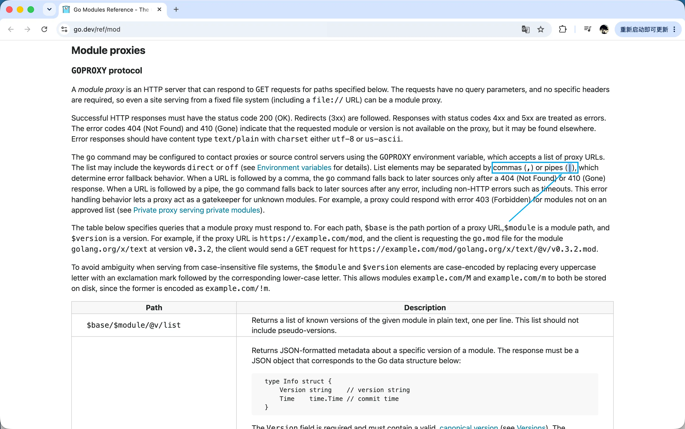
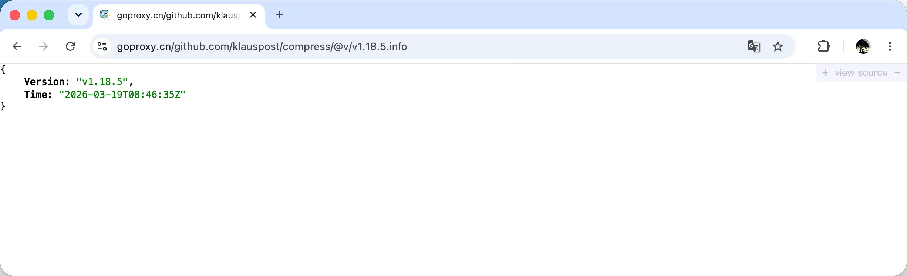

一天，我正在搬砖，本地修改完 Go 代码后，打算通过 make image 命令来构建 Docker 镜像进行测试。不过在构建镜像的过程中有一个报错，因为 make build 直接构建二进制已经通过，那肯定不是代码的问题，就没有在意。因为本机网络环境不是很好，大概率是网络问题导致 GOPROXY 代理站的模块拉取不到，直接让 Claude Code 帮我来解决。
Claude Code 非常给力，几秒钟就解决了问题，测试也很顺利。接下来就是将代码 Push 到远程 Git 仓库。过了几分钟，我收到了一封 CI 失败的邮件，这便引起了我的注意，感觉事情没有那么简单。
CI lint 失败
果然，我在 CI 日志中看到了 make lint 的报错：
1 | internal/sensor/builtin/echo_sensor.go:35:4: e.Interval undefined |
这个报错非常奇怪，因为 make build 是依赖 make lint 的，所以我本地已经验证过 make lint 是没有问题的，这就很诡异了。
于是，我又让 Claude Code 帮我分析一下日志。这一次 Claude Code 分析了一会，结果依然是 GOPROXY 代理的问题，提示我 CI 上也要换一个 GOPROXY 地址。我使用 CI 中的 GOPROXY 重新在本地执行 make image 看了一下日志，果然发现了重点：
1 | /go/pkg/mod/go.mongodb.org/mongo-driver@v1.17.9/x/mongo/driver/compression.go:17:2: |
经过分析，确认是 GOPROXY 代理站中的 github.com/klauspost/compress/@v/v1.18.5.zip 这个包文件损坏了，go mod download 下载失败。
常见解决方案
不过没关系，我还有备用的 GOPROXY 代理站。解决方案非常简单，配置 GOPROXY 为：
1 | GOPROXY="https://goproxy.proxy2,https://goproxy.proxy1,direct" |
NOTE:
https://goproxy.proxy1 为之前失败的
GOPROXY；https://goproxy.proxy2 为备用的GOPROXY。
这是一个非常标准的 GOPROXY 配置做法，通过逗号（,）分隔多个 PROXY 镜像站。go mod download 下载 Go 模块时，首先尝试 proxy2，如果 proxy2失败，则继续尝试 proxy1，如果 proxy1 也失败，则回退到不经过代理，直接访问源站。
为了保险起见，我直接配置了两个代理站，然后本地本地验证了一下，没什么问题，再次 Push 到远程 Git 仓库。
结果，过了一会，我再次收到了一封 CI 失败的邮件。
终极解决方案
这一次 CI 的日志中，显示有多个模块出现 500 Internal Server Error 错误。
经过我的实测，发现确实是 proxy2 代理站不够稳定，偶现 500 错误。但这就有点奇怪了，既然 proxy2 不够稳定，我也配置了降级策略，为什么 GOPROXY 没有切换到 proxy1 呢？
按照常理来分析，proxy1 只有 klauspost/compress 包有问题，proxy2 不够稳定。那么两者结合，极大概率不会出现问题，因为大部分模块都可以从 proxy2 下载成功，当 proxy2 下载失败时，自动降级到 proxy1，除非遇到 klauspost/compress 被降级到 proxy1，否则将都会成功。
那我为什么还是遇到了失败呢？
于是，我又让 Claude Code 帮我分析一下。Claude Code 给了我一个非常简单直接的答案：
GOPROXY 的分隔符如果为逗号（,），那么只有在遇到 HTTP 404/410 错误时，才会降级。而我遇到的是 500 错误，则不会降级。只需要将逗号（,）换成管道符（|）即可。
1 | GOPROXY="https://goproxy.proxy2|https://goproxy.proxy1|direct" |
一顿操作尝试后，果然成功了。而且每次都能成功，看来降级问题解决了。
探究原理
使用逗号（,）来分隔多个 GOPROXY 配置项，可谓是每一位 Gopher 的常识了。在 Google 上搜索 go goproxy 关键字：
搜到的所有文章，每一篇都是这么讲解的，无一例外。
即使是大名鼎鼎的 https://goproxy.io/ 和 https://goproxy.cn/ 也同样如此：


网上能搜到的各种文章，几乎最终都会归纳到如下 3 种情况之一：
官方默认值是：
1 | $ GOPROXY=https://proxy.golang.org,direct |
国内应该配置为：
1 | $ export GOPROXY=https://goproxy.cn |
或者：
1 | $ export GOPROXY=https://goproxy.io,direct |
再没有了，大家的答案出奇的一致。道理我们都懂，也一直是这样使用的。
但今天，却不灵了。
虽然问题解决了。但是为了谨慎求证，避免埋坑，我还是刻意继续搜了一下官方文档以及 Go 源码，进行了进一步的探索。
官方文档
其实，在官方文档中，还真有提到使用管道符（|）来分隔多个 PROXY 配置项：

但我从 Google 上搜索到的文章，也确实没看到有人提到这个。
这其实是一件很诡异的一件事情，甚至细思极恐。但也说明遇到这种现象的人确实不多。
源码佐证
虽然 Claude Code 和 Go 官方文档都告诉了我们解决方案。但我还是想从源码的角度，来探究一下，go mod download 到底是怎么处理 GOPROXY 的。
首先我在 go mod download 命令相关的代码中找到了 proxyList 函数：
https://github.com/golang/go/blob/go1.26.0/src/cmd/go/internal/modfetch/proxy.go#L71
1 | func proxyList() ([]proxySpec, error) { |
这个函数顾名思义，用来列出 GOPROXY 的配置项列表。
这里有一行重点 fallBackOnError := false，如果 PROXY 分隔符为管道符（|），则设置 fallBackOnError 值为 true。
fallBackOnError 是 proxySpec 结构体的一个字段：
1 | type proxySpec struct { |
根据注释可以知道，fallBackOnError 用于控制回退行为：
fallBackOnError为true时，如果当前代理返回任何错误，都会尝试列表中的下一个代理。- 如果
fallBackOnError为false，只有当错误等同于os.ErrNotFound时（即 404 和 410 响应），才会尝试下一个代理。
接着我们看一下 proxyList 函数的调用方 TryProxies 的定义：
https://github.com/golang/go/blob/go1.26.0/src/cmd/go/internal/modfetch/proxy.go#L138
1 | func TryProxies(f func(proxy string) error) error { |
这里遍历每一个 proxy（这里的 proxy 就是 proxySpec 结构体）执行 HTTP 请求，下载 Go 模块。
如果成功，直接返回。否则，会判断是否应该回退。重点代码片段：
1 | if !proxy.fallBackOnError && !isNotExistErr { |
只有当 fallBackOnError 为 true，并且不是 isNotExistErr 错误时，才进行回退降级处理。
fallBackOnError 为 true 的情况我们已经知道了，就是 GOPROXY 分隔符为管道符（|）时。而 isNotExistErr 错误是从执行 HTTP 请求的 f(proxy.url) 返回结果中获得的。我们知道，Go HTTP 请求出错，会返回 *HTTPError 类型，而它的 Is 方法定义如下：
https://github.com/golang/go/blob/go1.26.0/src/cmd/go/internal/web/api.go#L72
1 | func (e *HTTPError) Is(target error) bool { |
可以发现，当返回的 HTTP 状态码为 404 或 410 时，Is 方法才会返回 true。
所以，源码看完了，能够证实两件事情：
- 当使用逗号（
,）作为GOPROXY分隔符，执行go mod download遇到 404、410 状态码时，才会回退。 - 而使用管道符（
|）作为GOPROXY分隔符时，执行go mod download遇到任何错误，都会回退。
此外，还可以发现下载 Go 模块是在 for 循环中执行。也就是说，下载每一个 Go 模块，都会经历这个过程。而不是执行到某个模块时，遇到问题，切换代理后，下载下一个模块，就不再切换回来了。这可以最大限度的解决 PROXY 不稳定的问题。
手动验证流程
我写了一个 demo，可以用来验证 GOPROXY 配置中逗号 (,) 和管道 (|) 分隔符的区别。执行 go mod download 遇到不同情况的表现，都可以通过这个 demo 还原出来。
感兴趣的读者，可以点击链接进行查看：
https://github.com/jianghushinian/blog-go-example/tree/main/multi-goproxy
也特别建议读者可以自己将代码 clone 下来，实操一遍，加深理解。
扩展
GOPROXY 其实是 Go Module Proxy 协议的一部分，一个 Go Proxy 代理站的原理并不复杂，只需要根据协议实现如下几个核心端点，就是一个 Go Proxy 代理站：
| 端点 | 说明 | 响应格式 |
|---|---|---|
/<module>/@v/list |
列出所有已知版本 | 纯文本，每行一个版本 |
/<module>/@v/<version>.info |
版本元数据 | JSON: {Version, Time} |
/<module>/@v/<version>.mod |
go.mod 文件内容 | 文本 |
/<module>/@v/<version>.zip |
模块源码压缩包 | 二进制 |
/<module>/@latest |
最新版本信息 | JSON: {Version, Time} |
比如，拿 https://goproxy.cn/ 来举例子。
就访问我下载失败的 github.com/klauspost/compress@v1.18.5 模块，则可以访问这个地址 https://goproxy.cn/github.com/klauspost/compress/@v/v1.18.5.info ，得到如下结果：

其他端点，你可以自行尝试。
总结
本文通过一个真实的 CI lint 失败案例，来带大家探索 GOPROXY 不为人知的隐藏使用技巧。虽然 GOPROXY=[https://goproxy.io,direct](https://goproxy.io,direct) 能解决 99% 的问题，但当遇到 PROXY 网站不稳定时，我们还有管道符（|）这根救命稻草。
尽管这是一个非常微小的技巧，微不足道。但我还是愿意专门为此写一篇文章，来分享给大家。身份 Gopher，我想大部分人写了几年 Go 代码，都不一定能遇到这个问题。而 Google 搜索出来的答案，也确实证实了这一点，所以才有了这篇文章。
延伸阅读
- Go Modules Reference：https://go.dev/ref/mod#goproxy-protocol
- The most trusted Go module proxy in China：https://goproxy.cn/
- A Global Proxy for Go Modules：https://goproxy.io/
- Go Proxy 相关源码：https://github.com/golang/go/tree/go1.26.0/src/cmd/go/internal/modfetch
- 手动验证
GOPROXY示例代码：https://github.com/jianghushinian/blog-go-example/tree/main/multi-goproxy - 本文永久地址：https://jianghushinian.cn/2026/09/05/multi-goproxy/
联系我
- 公众号：Go编程世界
- 微信：jianghushinian
- 邮箱：jianghushinian007@outlook.com
- 博客：https://jianghushinian.cn
- GitHub：https://github.com/jianghushinian